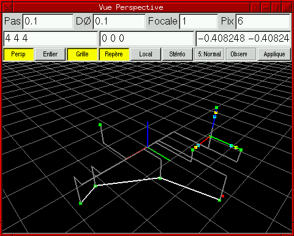

Cette classe permet d'offrir une interface 3D aux objets disposant d'une méthode d'affichage.
Il peut y avoir plusieurs instances de vues.
La vue d'``interaction'' a plus de priorité que les autres.
Les objets peuvent afficher des menus graphiques quand ils sont actifs.
